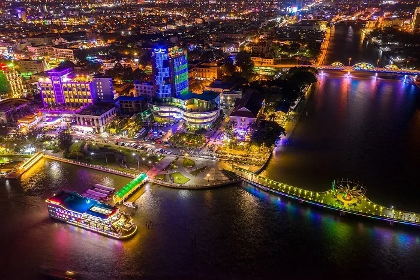

Hình Ảnh Nổi Bật




Giới Thiệu
Bến Ninh Kiều là bến nước nổi tiếng và lâu đời nằm bên bờ sông Hậu, ngay trung tâm thành phố Cần Thơ. Đây được xem là biểu tượng và là điểm hẹn quen thuộc của người dân cũng như du khách mỗi khi ghé thăm vùng đất Tây Đô.
Tại đây có công viên Ninh Kiều với tượng đài Bác Hồ, cầu đi bộ Ninh Kiều bắc qua sông Cần Thơ và bến tàu du lịch đưa khách tham quan chợ nổi Cái Răng, Cồn Sơn hay du thuyền ngắm cảnh trên sông về đêm.
Buổi tối, khu vực bến Ninh Kiều trở nên lung linh với ánh đèn từ cầu đi bộ, các nhà hàng nổi và quán cà phê ven sông, là nơi lý tưởng để thư giãn và thưởng thức đặc sản miền Tây.
Thông Tin Tham Quan
- Địa chỉ: Phường Tân An, Quận Ninh Kiều, Thành phố Cần Thơ
- Giờ mở cửa: Cả ngày (đẹp nhất vào buổi tối)
- Giá vé tham quan: Miễn phí
- Thời gian lý tưởng: 17:00 - 21:00
Hoạt Động Nổi Bật
Dạo bộ ven sông
Cầu đi bộ Ninh Kiều
Du thuyền sông Hậu
Chợ đêm Ninh Kiều
Ẩm thực đường phố
Chụp ảnh check-in
Ngắm hoàng hôn
Quán cà phê ven sông